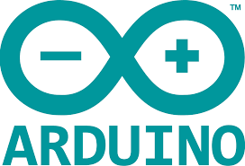
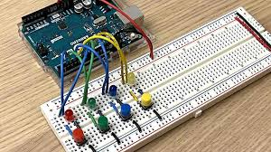

EMILIANO DE HARO RIVAS
UNIVERSIDAD SAN BUENAVENTURA
La pagina tiene el objetivo de mostrar las practicas previamente realizadas con el Profesor: Paolo Tovar. sobre el tema de programacion en arduino.
En la pagina se encontraran 2 botones cada uno llevara al apartado de cada ejercicio.
Pagina elaborada con la asesoria de la Profesora: Mari Rubian
Pagina Arduino
